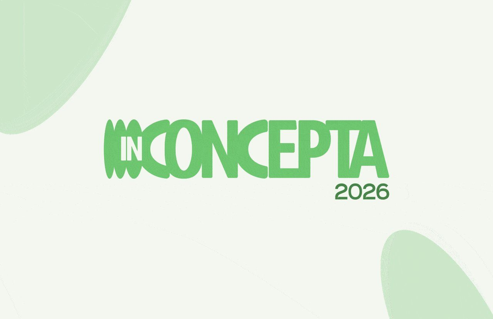
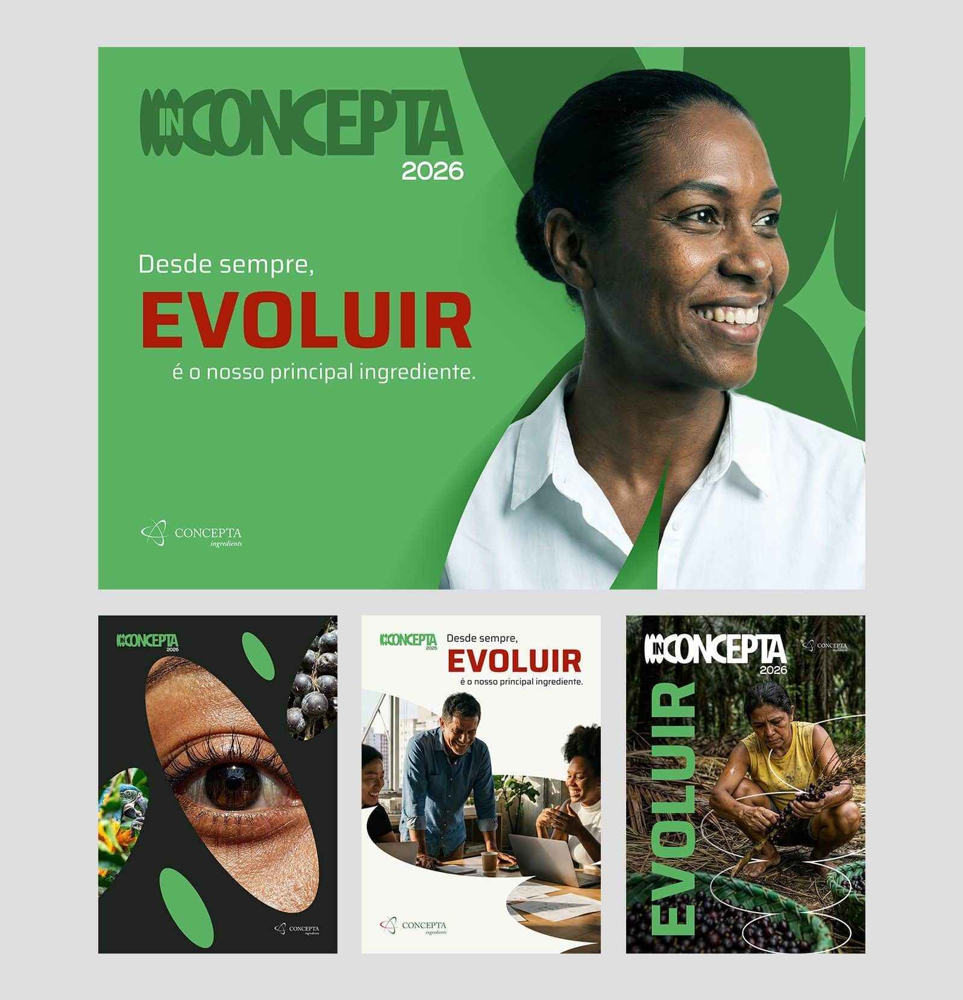
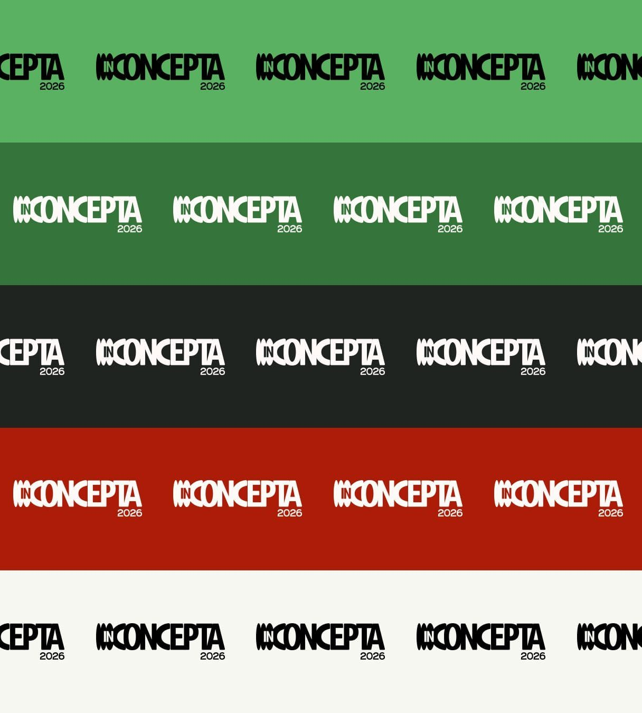
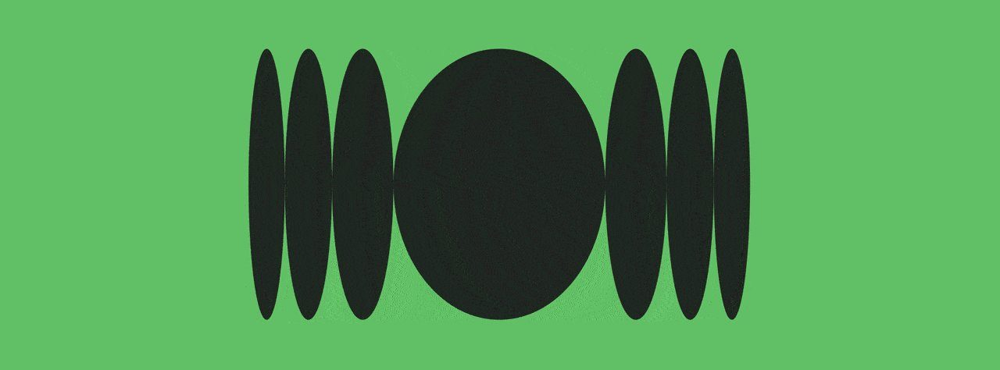
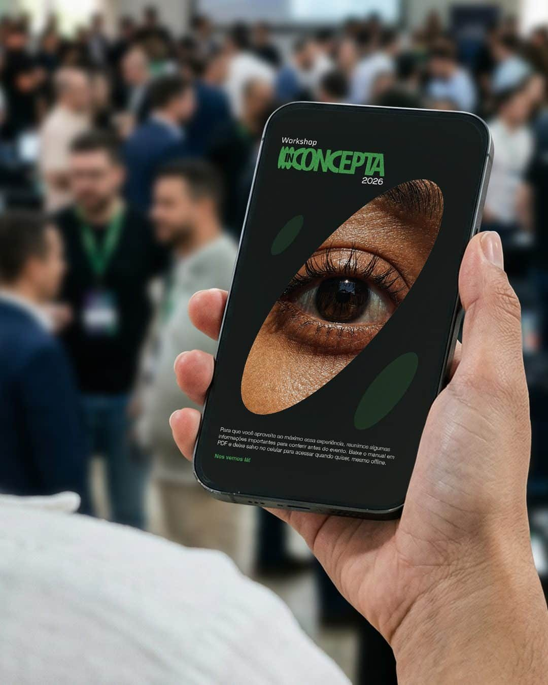
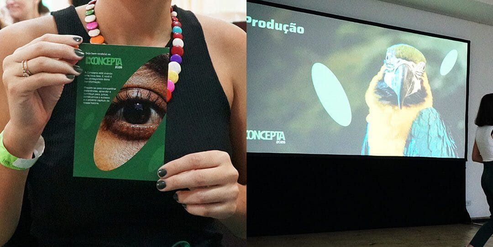

IN
Remete a estar envolvido, a fazer parte e não assistir de fora. Além disso, representa os ingredientes, que são a base do negócio.
Naming, selo e identidade para um workshop que marcou a nova fase da Concepta.
Case desenvolvido na Agência Bee Creative para Concepta Ingredients. Ver case original ↗

01 / O PROJETO
A Concepta Ingredients fornece ingredientes naturais da biodiversidade brasileira para as indústrias farmacêutica, alimentícia e de cosméticos, com mais de 30 anos de experiência.
A empresa precisava estruturar um workshop interno para 55 colaboradores, de diferentes áreas e cargos, que marcasse sua nova fase e alinhasse todos em torno de quem ela é, o que faz e para onde está indo, criando um momento marcante para a sua história.
02 / O NOME
Partimos do entendimento de que esse não seria apenas mais um evento interno, e por isso precisava de uma identidade única, com um nome capaz de traduzir o momento, reunir múltiplos significados e refletir sua essência. Daí surge INCONCEPTA, uma palavra fácil de pronunciar e memorizar, que soa forte no universo de negócios e foi pensada para atravessar edições, independentemente do tema anual.
O mote "Desde sempre, EVOLUIR é o nosso principal ingrediente" foi integrado à peça principal. Afinal, foi a busca por evoluir, sempre presente na trajetória da empresa, que a conduziu à sua nova fase.
Remete a estar envolvido, a fazer parte e não assistir de fora. Além disso, representa os ingredientes, que são a base do negócio.
Remete a tudo que gira em torno de um workshop: conexão, conhecimento, convergência, consciência.
Em sua forma completa, faz alusão a "encontro" e ao nome da marca.

03 / SELO E IDENTIDADE
Desenvolvemos um selo exclusivo, derivado das formas do símbolo original da marca. A construção visual parte da ideia de expansão: de algo que já existe internamente e ganha forma. Esse conceito se materializa na integração do elemento gráfico ao "IN", criando um selo proprietário e cheio de significado.
Os grafismos seguem a mesma lógica, expandindo as formas-base do logo em diferentes aplicações, garantindo dinamismo sem perder consistência. Para completar, trabalhamos uma paleta de cores inspirada na marca-mãe, que traduz esse novo momento.



04 / A JORNADA COMPLETA
Mais do que uma entrega pontual, estruturamos toda a jornada do evento, do planejamento ao pré, durante e pós, incluindo:

